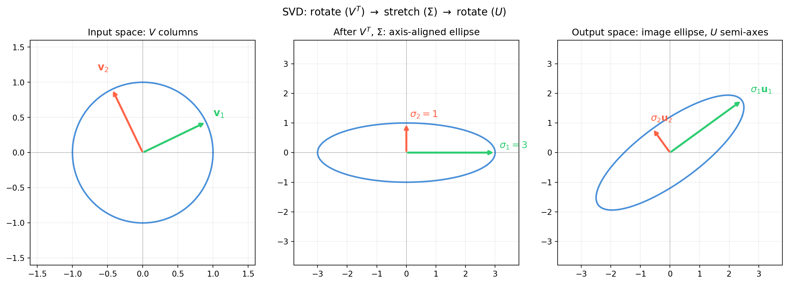

import numpy as np
import matplotlib.pyplot as plt
rng = np.random.default_rng(181)
# Build A = U diag(3,1) V^T with explicit rotation angles
def rot2(t):
return np.array([[np.cos(t), -np.sin(t)], # shape (2, 2)
[np.sin(t), np.cos(t)]])
theta_u = np.pi / 5
theta_v = np.pi / 7
U = rot2(theta_u) # shape (2, 2)
V = rot2(theta_v) # shape (2, 2)
S = np.array([3.0, 1.0]) # singular values
A = U @ np.diag(S) @ V.T # shape (2, 2)
U_c, s_c, Vt_c = np.linalg.svd(A, full_matrices=False)
print(f"A constructed: sigma = [{S[0]:.4f}, {S[1]:.4f}]")
print(f"numpy check: sigma = [{s_c[0]:.4f}, {s_c[1]:.4f}]")
# Unit circle and its image
angles = np.linspace(0, 2 * np.pi, 300) # shape (300,)
circle = np.stack([np.cos(angles),
np.sin(angles)], axis=0) # shape (2, 300)
ellipse = A @ circle # shape (2, 300)
fig, axes = plt.subplots(1, 3, figsize=(14, 5))
# Left: input space with V columns
ax = axes[0]
ax.plot(circle[0], circle[1], color='#4a90d9', lw=2)
v1 = V[:, 0] # shape (2,)
v2 = V[:, 1] # shape (2,)
ax.annotate('', xy=v1, xytext=[0.0, 0.0],
arrowprops=dict(arrowstyle='->', color='#2ecc71', lw=2.5))
ax.annotate('', xy=v2, xytext=[0.0, 0.0],
arrowprops=dict(arrowstyle='->', color='tomato', lw=2.5))
ax.text(v1[0] * 1.2, v1[1] * 1.2, r'$\mathbf{v}_1$', fontsize=13, color='#2ecc71', ha='center')
ax.text(v2[0] * 1.3, v2[1] * 1.3, r'$\mathbf{v}_2$', fontsize=13, color='tomato', ha='center')
ax.set_xlim(-1.6, 1.6)
ax.set_ylim(-1.6, 1.6)
ax.set_aspect('equal')
ax.set_title('Input space: $V$ columns', fontsize=12)
ax.axhline(0, color='#333333', lw=0.4, alpha=0.5)
ax.axvline(0, color='#333333', lw=0.4, alpha=0.5)
ax.grid(alpha=0.2)
# Middle: after V^T then Sigma (axis-aligned ellipse)
ax2 = axes[1]
circle_rot = V.T @ circle # shape (2, 300)
circle_str = np.diag(S) @ circle_rot # shape (2, 300)
ax2.plot(circle_str[0], circle_str[1], color='#4a90d9', lw=2)
ax2.annotate('', xy=[S[0], 0.0], xytext=[0.0, 0.0],
arrowprops=dict(arrowstyle='->', color='#2ecc71', lw=2.5))
ax2.annotate('', xy=[0.0, S[1]], xytext=[0.0, 0.0],
arrowprops=dict(arrowstyle='->', color='tomato', lw=2.5))
ax2.text(S[0] + 0.15, 0.15, r'$\sigma_1 = 3$', fontsize=12, color='#2ecc71')
ax2.text(0.12, S[1] + 0.2, r'$\sigma_2 = 1$', fontsize=12, color='tomato')
ax2.set_xlim(-3.8, 3.8)
ax2.set_ylim(-3.8, 3.8)
ax2.set_aspect('equal')
ax2.set_title(r'After $V^T$, $\Sigma$: axis-aligned ellipse', fontsize=12)
ax2.axhline(0, color='#333333', lw=0.4, alpha=0.5)
ax2.axvline(0, color='#333333', lw=0.4, alpha=0.5)
ax2.grid(alpha=0.2)
# Right: output space with U columns and final ellipse
ax3 = axes[2]
ax3.plot(ellipse[0], ellipse[1], color='#4a90d9', lw=2)
u1 = U[:, 0] # shape (2,)
u2 = U[:, 1] # shape (2,)
ax3.annotate('', xy=u1 * S[0], xytext=[0.0, 0.0],
arrowprops=dict(arrowstyle='->', color='#2ecc71', lw=2.5))
ax3.annotate('', xy=u2 * S[1], xytext=[0.0, 0.0],
arrowprops=dict(arrowstyle='->', color='tomato', lw=2.5))
ax3.text(u1[0] * S[0] * 1.1 + 0.05, u1[1] * S[0] * 1.1 + 0.1,
r'$\sigma_1 \mathbf{u}_1$', fontsize=12, color='#2ecc71')
ax3.text(u2[0] * S[1] * 1.2 + 0.05, u2[1] * S[1] * 1.2 + 0.1,
r'$\sigma_2 \mathbf{u}_2$', fontsize=12, color='tomato')
ax3.set_xlim(-3.8, 3.8)
ax3.set_ylim(-3.8, 3.8)
ax3.set_aspect('equal')
ax3.set_title(r'Output space: image ellipse, $U$ semi-axes', fontsize=12)
ax3.axhline(0, color='#333333', lw=0.4, alpha=0.5)
ax3.axvline(0, color='#333333', lw=0.4, alpha=0.5)
ax3.grid(alpha=0.2)
fig.suptitle(r'SVD: rotate ($V^T$) $\to$ stretch ($\Sigma$) $\to$ rotate ($U$)', fontsize=13)
fig.tight_layout()
plt.savefig('ch18-svd/fig-svd-geometry.png', dpi=150, bbox_inches='tight')
plt.show()A constructed: sigma = [3.0000, 1.0000]
numpy check: sigma = [3.0000, 1.0000]